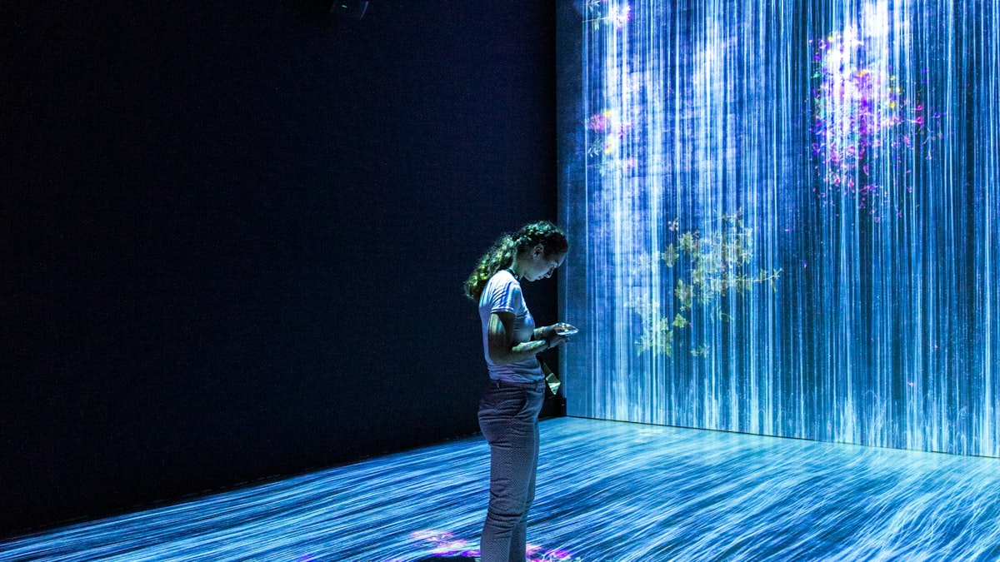

Açık Kaynak LLM'ler: Llama, Mistral, Qwen ve Gemma'ya Pratik Bir Bakış

Bir dil modeli seçmek, ev mi kiralasam yoksa satın mı alsam sorusuna benzer. Kapalı modeller, her şeyin dahil olduğu lüks bir kiralık daire gibidir: anahtarı alır, hemen taşınırsınız; ama duvarları kıramaz, kombiyi değiştiremezsiniz. Açık kaynak modeller ise satın aldığınız bir ev gibidir: bakımı size kalır, ama istediğiniz duvarı yıkar, bodruma stüdyo kurarsınız. Bu yazıda Llama, Mistral, Qwen ve Gemma ailelerini bu gözle inceleyip, açık kaynağı ne zaman tercih etmenin mantıklı olduğunu konuşacağız.
İçindekiler
"Açık kaynak LLM" tam olarak ne demek?
Günlük konuşmada "açık kaynak LLM" deyince çoğu zaman açık ağırlıklı (open-weight) modelleri kastederiz: yani modelin eğitilmiş parametrelerini (ağırlıklarını) indirip kendi makinenizde, kendi sunucunuzda veya bulutta çalıştırabildiğiniz modeller. Bu, klasik yazılımdaki "açık kaynak"tan biraz farklıdır; çünkü çoğu durumda eğitim verisi ve eğitim kodunun tamamı paylaşılmaz, yalnızca son ürün olan ağırlıklar açılır.
Önemli bir ayrım da lisanstır. Bazı modeller gerçekten izin verici (permissive) lisanslarla gelir; bazılarıysa "kullanabilirsin ama şu koşullarla" diyen topluluk lisanslarıyla. Yani "açık" kelimesi tek tip değildir.
Kısaca: açık ağırlıklı model, motoru kaputu açık teslim edilen bir araba gibidir. Nasıl çalıştığını görür, parçalarını değiştirir, başka bir şasiye takarsınız. Kapalı model ise sadece direksiyonuna geçtiğiniz, kaputu kilitli bir araçtır.
Dört aile: Llama, Mistral, Qwen, Gemma
Bugün en çok konuşulan dört açık ağırlıklı aileye kısaca bakalım. Her birinin kendine has bir karakteri var.
- Llama (Meta): Ekosistemin lokomotifi. Geniş bir topluluk, sayısız ince ayar türevi (fine-tune) ve bol miktarda eğitim materyali var. Birçok araç önce Llama'yı destekler, sonra diğerlerini.
- Mistral (Mistral AI): Fransız ekibin imzası; verimlilik odaklı. Görece küçük modellerden iyi performans çıkarmasıyla ve "uzman karması" (Mixture of Experts) gibi mimarileriyle tanınır. Sınırlı donanımda güçlü bir seçenektir.
- Qwen (Alibaba): Çok dilli yeteneğiyle öne çıkar; özellikle Çince ve Asya dillerinde güçlüdür, ama İngilizce ve diğer dillerde de rekabetçidir. Farklı boyutlarda geniş bir yelpaze sunar.
- Gemma (Google): Google'ın Gemini araştırmalarından damıtılmış, hafif ve düzenli modeller. Küçük boyutlarda dengeli performans ve temiz dokümantasyon sunmasıyla bilinir; tek bir GPU'da çalıştırmaya uygun seçenekleri vardır.
Açık vs. kapalı: artılar ve eksiler
Kapalı modeller (örneğin bir API üzerinden eriştiğiniz büyük ticari modeller) genellikle ham yetenekte ön sıradadır ve dakikalar içinde kullanılmaya başlanabilir. Bakım, ölçekleme ve güncelleme sağlayıcının sorunudur. Buna karşılık kontrolünüz ödediğiniz API çağrısıyla sınırlıdır.
Açık modeller ise size sahiplik verir. Modeli kendi ortamınızda çalıştırır, veriyi dışarı çıkarmaz, davranışını derinlemesine ayarlarsınız. Bedeli ise altyapı, bakım ve uzmanlık yükünü üstlenmenizdir.
- Açık kaynağın artıları: veri gizliliği, satıcıya bağımlı kalmama (vendor lock-in yok), öngörülebilir maliyet, sınırsız ince ayar, çevrimdışı/izole ortamlarda çalışabilme.
- Açık kaynağın eksileri: kurulum ve bakım yükü, donanım ihtiyacı, en uç görevlerde bazen daha düşük ham performans, güvenlik ve uyumluluğun tamamen sizde olması.
- Kapalının artıları: en güncel yetenekler, sıfır altyapı, kolay başlangıç, sağlayıcının güvenlik ve güncelleme desteği.
- Kapalının eksileri: veri sağlayıcıya gider, kullanım başı maliyet ölçekle birlikte büyür, model bir gün değişebilir veya emekliye ayrılabilir, davranışa müdahale sınırlıdır.
Gizlilik, maliyet ve ince ayar özgürlüğü
Gizlilik
Hassas veriyle çalışıyorsanız (sağlık kayıtları, hukuki belgeler, içe dönük şirket verisi) açık modelin en büyük kozu burada devreye girer: veri makinenizden hiç çıkmaz. Hiçbir üçüncü tarafa istek göndermezsiniz. Düzenlemelerin sıkı olduğu sektörlerde bu, "olsa iyi olur"dan "olmazsa olmaz"a terfi eder.
Maliyet
Maliyet hesabı sezgilere aykırı olabilir. Kapalı modellerde maliyet kullanımla doğrusal artar: ne kadar çok çağrı, o kadar çok fatura. Açık modellerde ise maliyet büyük ölçüde sabittir: donanımı bir kez ayırırsınız, sonra ister bin ister bir milyon istek gönderin, marjinal maliyet çok düşüktür. Düşük hacimde kapalı genelde daha ucuz; yüksek ve sürekli hacimde açık kaynak ölçek ekonomisi kazandırır.
İnce ayar özgürlüğü
Açık modelin gerçek süper gücü ince ayardır. Modeli kendi alanınızın diline, terminolojinize ve üslubunuza göre eğitebilirsiniz. Üstelik LoRA gibi yöntemlerle, tüm modeli değil yalnızca küçük bir "ek katman" eğiterek bunu uygun maliyetle yaparsınız. Kapalı modellerde ince ayar imkânı varsa bile genelde sağlayıcının çizdiği sınırlar içinde kalır.
Ne zaman hangisini seçmeli?
Karar verirken kendinize birkaç basit soru sorun:
- Veri ne kadar hassas? Veri kurumdan çıkamıyorsa açık model neredeyse zorunludur.
- Hacim ne kadar büyük ve sürekli? Yüksek ve istikrarlı hacim açık kaynağı; düşük ve değişken hacim kapalı modeli işaret eder.
- En uç yetenek mi, "yeterince iyi" mi? Sınırın en ucundaki akıl yürütme gerekiyorsa kapalı modeller hâlâ önde olabilir. Çoğu pratik görev için iyi bir açık model fazlasıyla yeterlidir.
- Ekipte uzmanlık var mı? Barındırma ve bakımı üstlenecek ekibiniz yoksa kapalı modelle başlamak makuldür.
Pratik bir tavsiye: Prototipi kapalı bir API ile hızlıca kurun, ürün-pazar uyumunu bulun. Hacim ve gizlilik ihtiyaçları netleştiğinde açık bir modele kademeli geçişi planlayın. İkisini bir arada kullanan melez (hybrid) mimariler de gayet yaygındır.
Küçük bir başlangıç örneği
Açık ağırlıklı bir modeli yerel makinede çalıştırmak göründüğünden kolaydır. Aşağıda, popüler bir yerel çalıştırma aracıyla bir modeli indirip ona soru sormanın sözde-kod taslağı var:
# 1) Yerel çalıştırıcıyı kurduktan sonra bir modeli indir
ollama pull llama3.1
# 2) Modele tek satırlık bir soru sor
ollama run llama3.1 "Açık kaynak LLM nedir, bir cümleyle açıkla."
# 3) Veya bir programdan HTTP ile çağır (sözde-kod)
POST http://localhost:11434/api/generate
{
"model": "llama3.1",
"prompt": "Müşteri e-postasını kibarca özetle: ...",
"stream": false
}
# -> Yanıt JSON olarak döner; veri makineden hiç çıkmaz.
Buradaki kilit nokta üçüncü adımdaki yorum: istek localhost'a gider, yani veri kendi makinenizde kalır. Aynı şablonu Mistral, Qwen veya Gemma için model adını değiştirerek kullanabilirsiniz.
Öne çıkanlar
- "Açık kaynak LLM" çoğunlukla açık ağırlıklı demektir; lisanslar model model değişir, mutlaka okuyun.
- Llama geniş ekosistem, Mistral verimlilik, Qwen çok dillilik, Gemma hafiflik ve düzenle öne çıkar.
- Açık kaynağın asıl kozları: gizlilik, öngörülebilir maliyet ve sınırsız ince ayar.
- Düşük hacimde kapalı API, yüksek ve sürekli hacimde kendi modelinizi barındırmak genelde daha ekonomiktir.
- Sağlam bir strateji: kapalıyla hızlı başla, gizlilik ve ölçek ihtiyacı netleşince açığa geç.
Açık kaynak modeller kapalı modeller kadar "akıllı" mı?
En uç akıl yürütme görevlerinde kapalı modeller hâlâ önde olabilir, ancak fark her geçen ay kapanıyor. Günlük görevlerin büyük çoğunluğunda iyi bir açık model, ihtiyacınızdan fazlasını karşılar.
Açık modeli çalıştırmak için süper bilgisayar gerekir mi?
Hayır. Küçük ve orta boy modeller (örneğin nicemlenmiş/quantized sürümler) tek bir modern GPU'da, hatta bazıları güçlü bir dizüstüde çalışır. İhtiyaç, model boyutuyla birlikte artar.
İnce ayar (fine-tuning) için tüm modeli yeniden mi eğitmem gerekir?
Genelde hayır. LoRA gibi yöntemlerle yalnızca küçük bir ek parametre kümesini eğitirsiniz; bu, çok daha az kaynakla alanınıza özgü davranış kazandırır.
Özetle, açık kaynak ve kapalı modeller arasındaki seçim bir "hangisi daha iyi" yarışı değil, "bana ne uygun" tercihidir. Gizlilik, maliyet ve özgürlük sizin için ön plandaysa açık ağırlıklı bir model güçlü bir temeldir. Kendi verinizle güvenli yapay zeka çözümleri kurmayı planlıyorsanız, EcoFluxion ekibi bu kararları sizinle birlikte değerlendirmekten memnuniyet duyar.